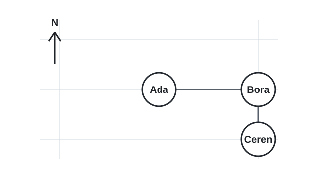

Choose one area and decide what your group wants to compare. Several groups may choose the same area, but each group prepares and runs its own experiment.
Project 1 · LLM
Spatial reasoning
Question: How well can a model combine several spatial relations?
Task
Create arrangements involving people or objects. Relations may include north, south, east, west, and the four diagonal directions. Ask for the direction of one entity relative to another. Every base case must have matched Turkish and English versions.
Direction rule. Every stated relation is an exact one-cell movement. After the relations are combined, the queried entities must be on the same row, the same column, or an exact diagonal. Exclude overlaps and unequal offsets such as five squares west and one square north.
Examples
Example 1 — combining three relations
Turkish
Mert sabit bir noktadadır. Elif, Mert'in bir kare kuzeyindedir. Can, Elif'in bir kare doğusundadır. Zeynep, Can'ın bir kare güneyindedir. Zeynep, Mert'e göre hangi yöndedir? Yalnızca yönün adını yaz.
English
Mert is at a fixed point. Elif is one square north of Mert. Can is one square east of Elif. Zeynep is one square south of Can. In which direction is Zeynep from Mert? Write only the direction.
Answer:doğu / east
Example 2 — equivalent Turkish expressions
Ece, Deniz'in bir kare batısındadır.
Deniz'in bir kare batısında Ece bulunmaktadır.
The relation is unchanged. A group may use complete matched questions to test whether this wording change affects the model.
Example 3 — adding an irrelevant relation
The first example can be repeated after adding a fact such as:
Derya, Kerem'in bir kare güneyindedir.
The added relation does not involve the queried entities, so the correct answer remains doğu / east.
Possible questions
Does accuracy change with the number of relations needed for the answer?
What happens when relation sentences are ordered, reversed, or shuffled?
Do irrelevant relations change the answer?
Does reversing an expression, such as “A is north of B” to “B is south of A,” affect accuracy?
Which Turkish word orders, spellings, or expressions cause different results?
Choose one main question. You may propose another spatial-language question in the project plan.
Project 2 · LLM
Temporal reasoning
Question: Can a model recover event order when events are described indirectly or mentioned in a different order?
Task
Create problems using events, dates, or before-and-after relations. The simplest version asks the model to order events. Other versions may study date arithmetic, reported speech, incomplete information, or states that change over time.
One answer must be justified. The answer program must check whether the supplied facts determine one answer. If several answers are possible, exclude the case or make “cannot be determined” part of the task.
Examples
Example 1 — ordering arrivals
Turkish
Burcu laboratuvara Ali'den önce geldi. Deniz, Cem'den sonra geldi. Cem, Ali'den sonra fakat Deniz'den önce geldi. Dört kişiyi laboratuvara geliş sırasına göre en erkenden en geç olana doğru yaz.
English
Burcu arrived at the laboratory before Ali. Deniz arrived after Cem. Cem arrived after Ali but before Deniz. List the four people from the earliest to the latest arrival.
Answer: Burcu → Ali → Cem → Deniz
Example 2 — equivalent temporal expressions
Sunum başlamadan önce Ayşe salona girdi.
Ayşe salona girdikten sonra sunum başladı.
Both sentences place Ayşe's arrival before the start of the presentation.
Example 3 — information that is not sufficient
Ali, Cem'den önce geldi. Burcu da Cem'den önce geldi. İlk kim geldi?
Ali arrived before Cem. Burcu also arrived before Cem. Who arrived first?
Answer: cannot be determined. The facts do not establish whether Ali or Burcu arrived first.
Possible questions
How does the number of events affect accuracy?
What changes when events are mentioned chronologically, in reverse, or in shuffled order?
Do different Turkish temporal constructions produce different answers?
Can the model identify questions with insufficient information?
How well does the model track states that change across a sequence of events?
Choose one main question. You may propose another temporal question in the project plan.
Project 3 · VLM
Text and diagram reasoning
Question: Does a VLM answer differently when the same spatial problem is given as text or as a diagram?
Task
Create each spatial scene once, then produce its Turkish text, English text, and PNG diagram from the same scene data. Use the same VLM in every presentation condition. The experimental diagrams must be actual images, not ASCII text.
Unless map orientation is the factor being studied, keep north at the top and show a visible north arrow.
Example
Turkish text
Ada, Bora'nın bir kare batısındadır. Ceren, Bora'nın bir kare güneyindedir. Ada, Ceren'e göre hangi yöndedir? Yalnızca yönün adını yaz.
English text
Ada is one square west of Bora. Ceren is one square south of Bora. In which direction is Ada from Ceren? Write only the direction.
Diagram

The image, Turkish text, and English text describe the same scene.
Answer in every format:kuzeybatı / northwest
Possible questions
How do Turkish text, English text, image, and text-with-image conditions compare?
Do simple and cluttered diagrams produce different results?
What happens when the observer's viewpoint changes?
How does a rotated map or compass arrow affect the answer?
Can visual perception errors be distinguished from spatial reasoning errors?
Choose one main question. You may propose another text–image question in the project plan.
Project 4 · LLM or VLM
Propose your own project
You may propose a different project related to reasoning with LLMs or VLMs. It should investigate a specific ability that can be tested systematically; it should not be a general chatbot or application-development project.
Required structure
a clear research question;
test cases with correct or checkable answers;
matched Turkish and English versions, or another justified set of matched conditions;
the same base cases across the compared conditions;
a fixed scoring rule with correct/total counts and accuracy;
error analysis based on the complete results;
a scope that is feasible with the available models and computing resources.
Possible directions include another kind of spatial or temporal reasoning, Turkish logical or quantitative reasoning, alternative diagram or structured representations, or a cross-lingual reasoning task. These examples do not limit what may be proposed.
Proposal deadline: Submit the project plan no later than 1 December 2026. Approval is required before producing the full test set.
Before producing the full test set
Read How the test cases are created and complete the project plan. Run a pilot with 5–10 cases, correct implementation problems, and then keep the test set, prompts, and settings fixed for the full experiment.